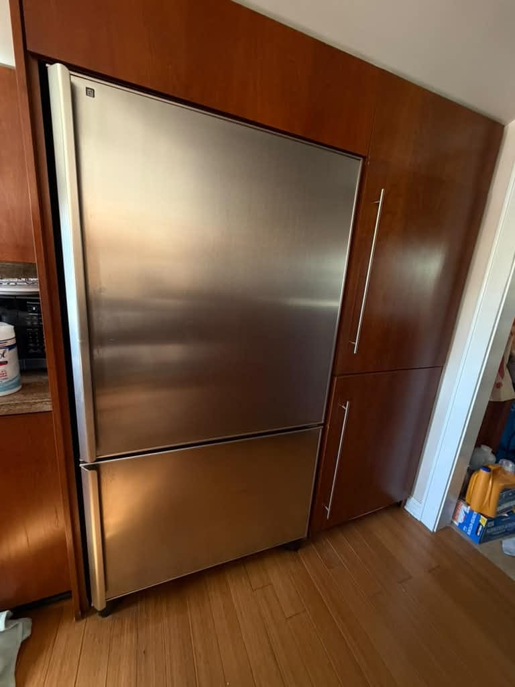
Refrigerator Repair in Orange County, CA
Same-day service on all major brands. Your food can't wait; neither do we.
5.0 · 156 Google reviewsMon–Sat, 8am–7pm. You don't need to know which part failed; tell us what the refrigerator is doing.
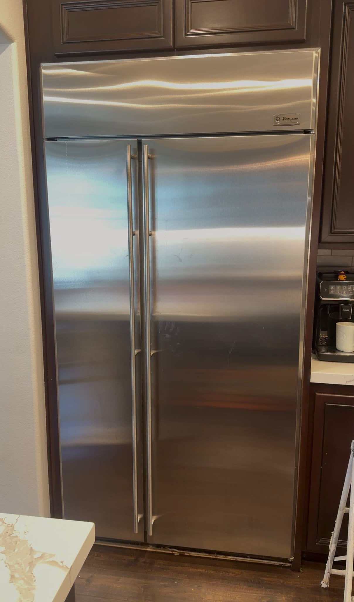
What to expect
- Flat $99 diagnostic feeApplied toward the repair if you approve the work.
- Written quote firstItemized, before any work starts.
- 90-day parts, 30-day laborWarranty on every repair.
- Same-day serviceCall or request online.
Family-owned since 2017 · Licensed, bonded & insured
Recent Refrigerator Repairs
Our latest refrigerator jobs include, in Palm Springs, a Sub-Zero under-counter evaporator leak repair and a KitchenAid condenser fan motor replacement, plus scheduled maintenance on a built-in Sub-Zero side-by-side in Newport Beach, ice maker replacements on LG French-door refrigerators in Mission Viejo and Orange and a damper control replacement on a Frigidaire side-by-side in Chino Hills that had stopped cooling. Others include a door gasket replacement on a KitchenAid French-door refrigerator in San Clemente, a water leak repair on a KitchenAid built-in in Brea and two separate GE Monogram repairs in Irvine: replacement of a control board and thermistors, and replacement of a condenser fan motor. We also completed JennAir maintenance in Fullerton and a Viking evaporator fan replacement in Costa Mesa. More refrigerator jobs are shown below.

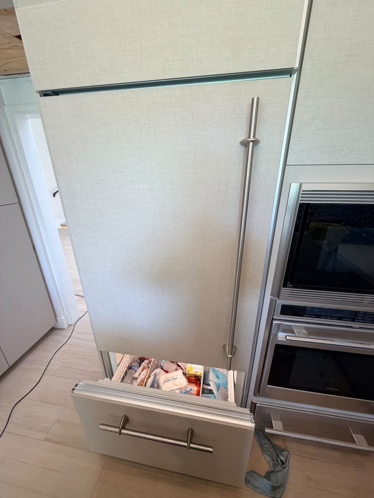
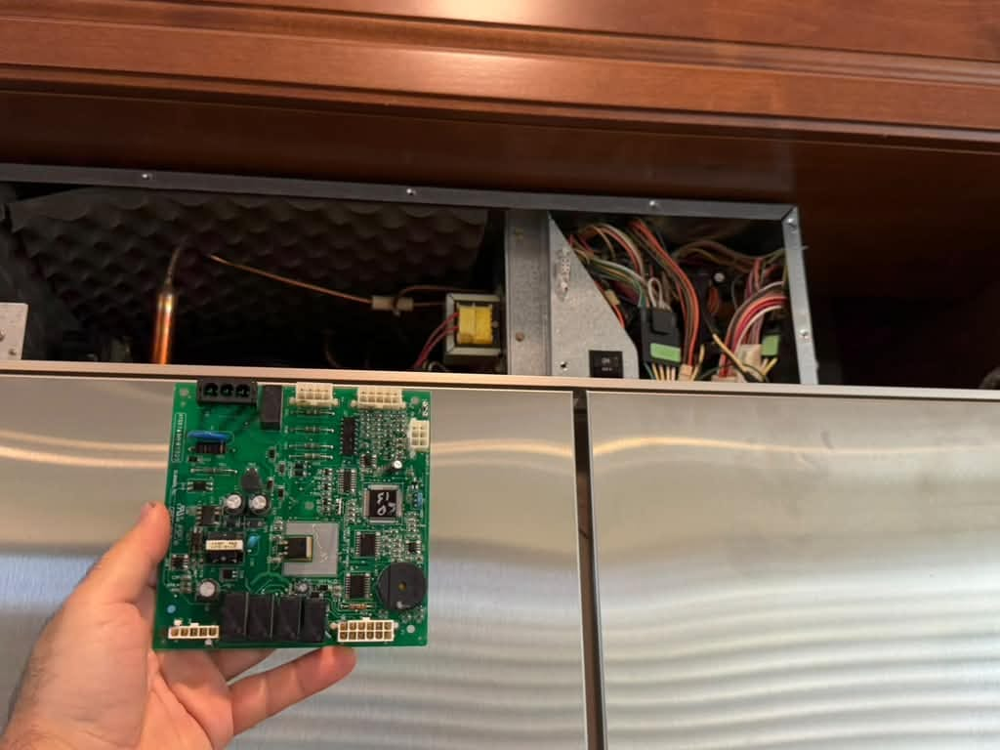


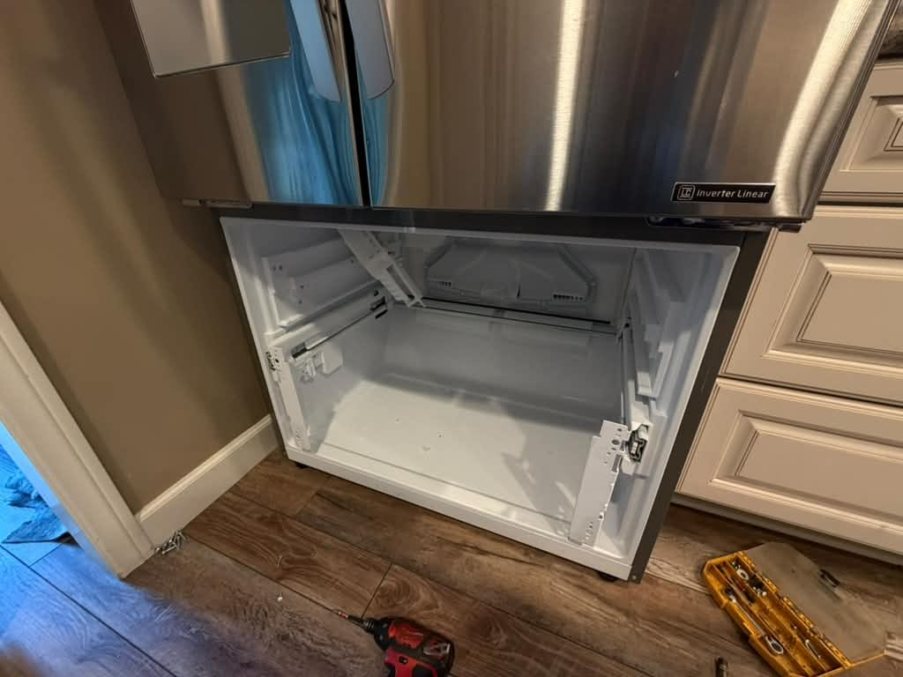
Show all 25 refrigerator repairs

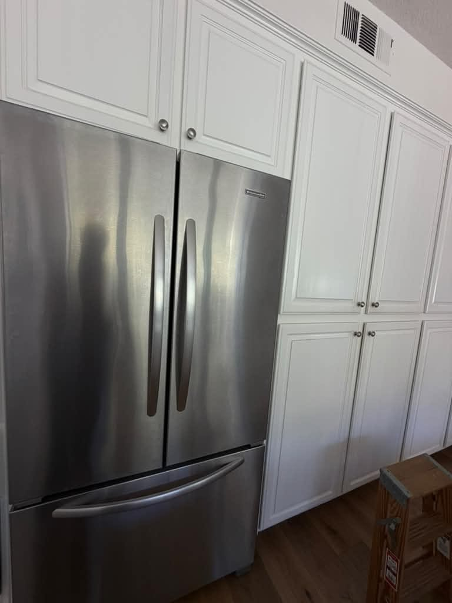
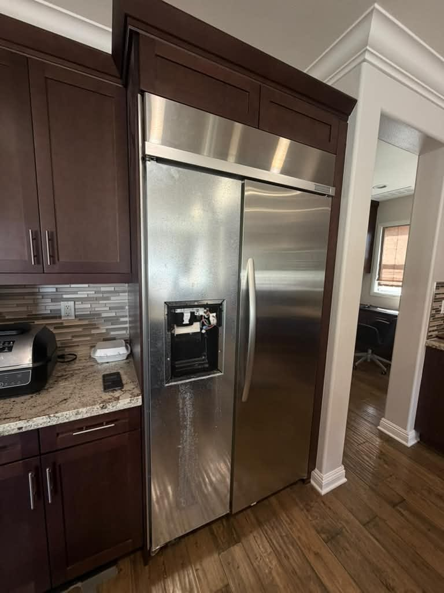
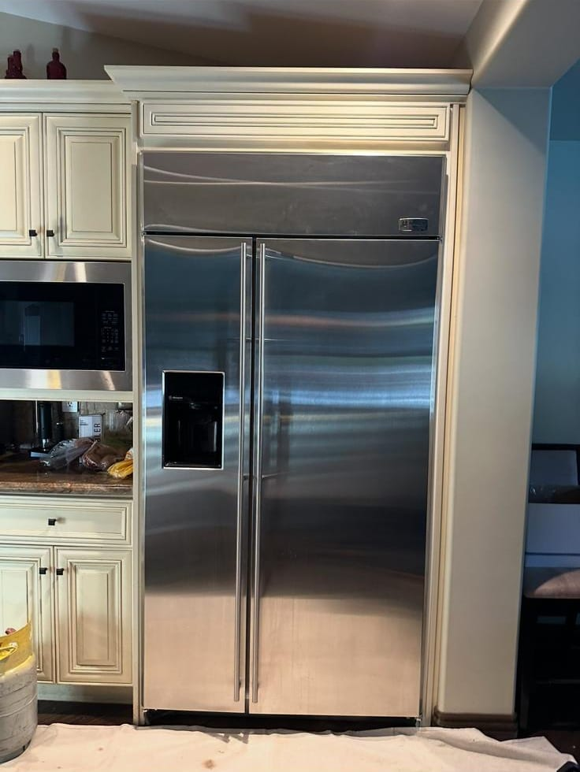
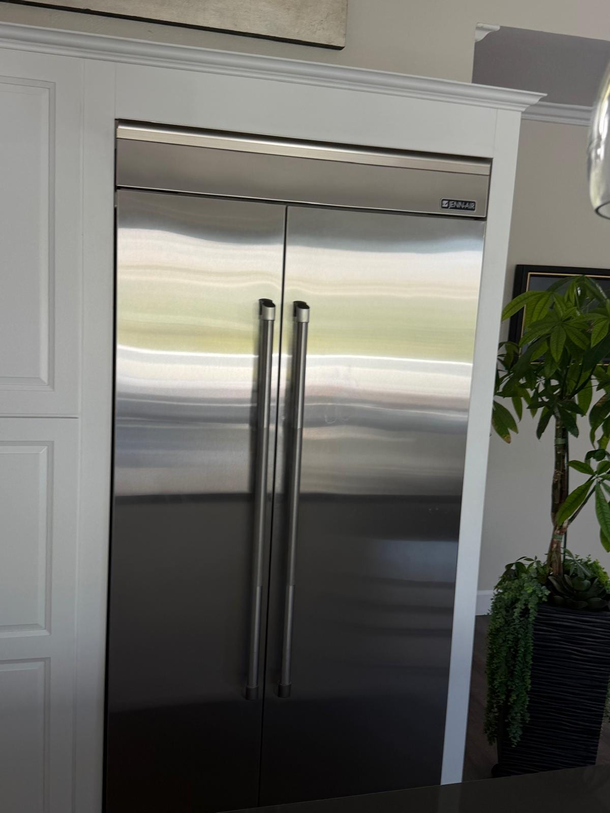

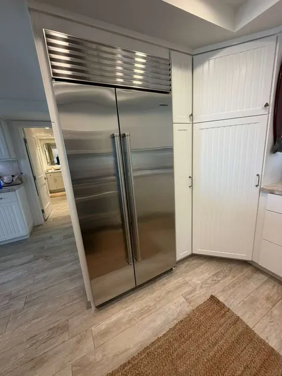
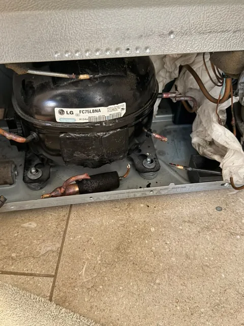
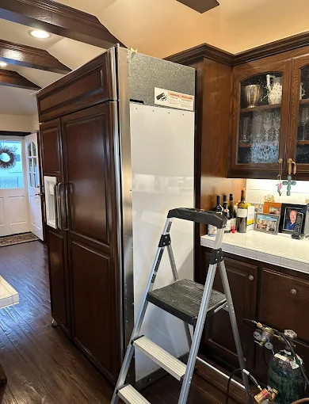
Built-In Refrigerator Access
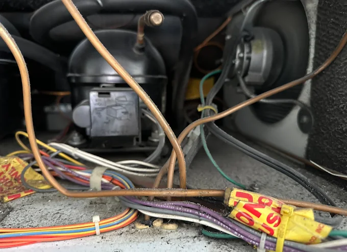
Compressor Compartment Access
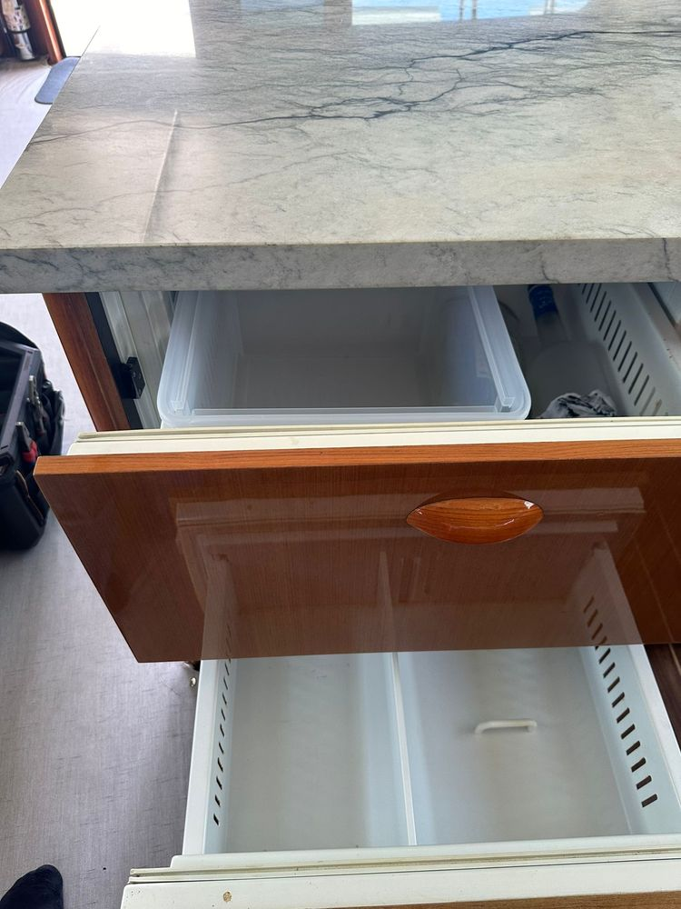
Marine Drawer Refrigerator Service
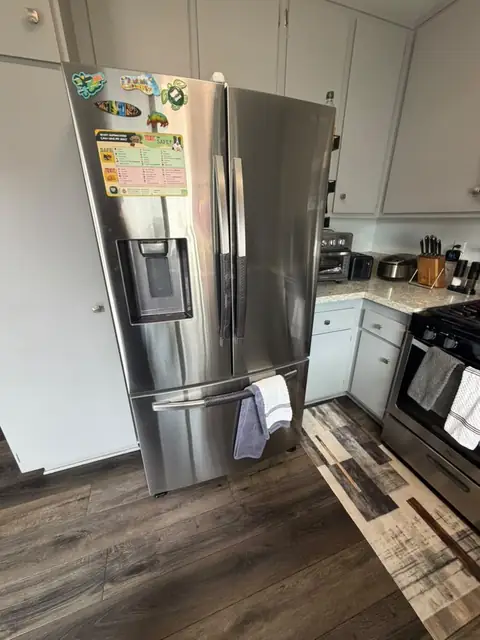
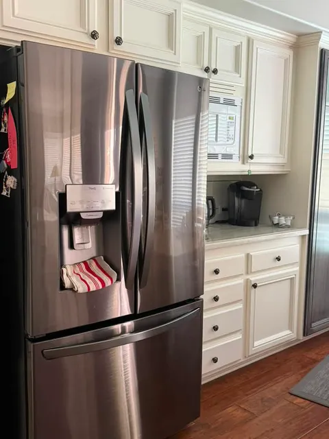
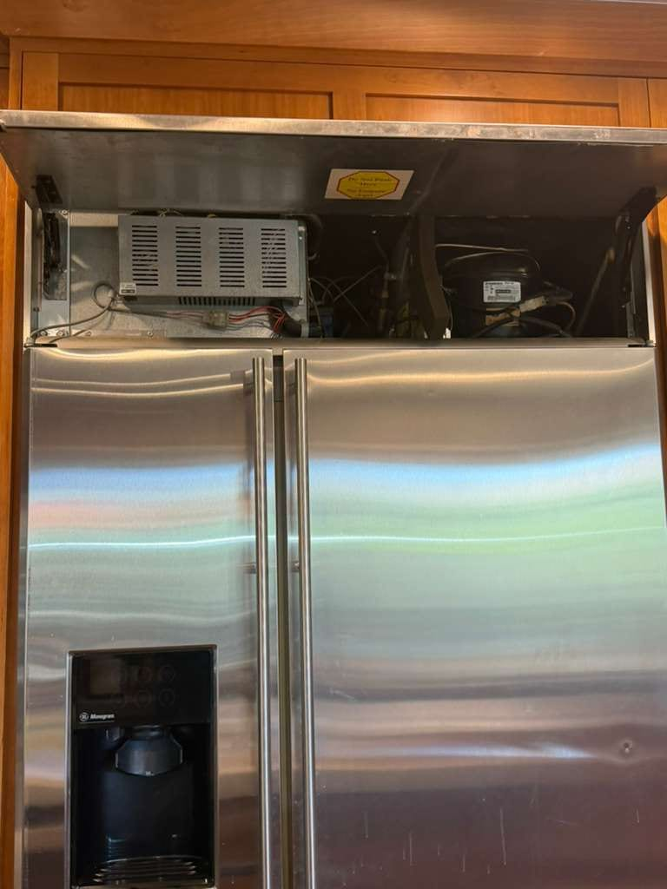


San Diego, CA: one-off job outside our service area
Sub-Zero Evaporator Coil and Compressor Replacement
See more real repairs on our recent repairs gallery.
What Refrigerator Repair Customers Say
From our 156 verified 5-star Google reviews
Thank you for fixing my Sub-Zero refrigerator. AG was on time. Changed fan motor. Fast service. I will call them again if I need something repaired!
AG fixed my old GE Monogram refrigerator. Very friendly, fast and good service. Recommend
AG was prompt, attentive and very knowledgeable about refrigeration and repairs. We have called him in the past and will continue to call for our other appliance needs.
This guy is wonderful. Not only fixed the fridge. He took time and no rush. He cleaned everything and even before he left we heard the sound of making ice cubes. On top of that he fixed the gas flow of the burner as a courtesy. Nice guy. Very friendly and professional as well.
AG was very professional and on time ! He immediately took care of my refrigerator needs and am so happy!
Our repairman was great! On time, personable, knowledgeable, and fixed our problem. Looking to him to repair another appliance as well. We'll be back!
How It Works
From your first call to a fully working fridge: here's what to expect.
Request a RepairCall or Request Online
Call (949) 629-5365 or submit the contact form. Tell us the brand, model, and symptoms.On-Site Diagnosis
A technician arrives in a 2-hour window, inspects the fridge, and identifies the root cause.Upfront Quote
You get a clear quote before we touch anything. The $99 diagnostic fee is applied toward the repair if you proceed.Repair & Warranty
Most repairs are finished the same day. Every repair carries a 90-day parts and 30-day labor warranty.
Pricing & Discounts
- $99 diagnostic fee: applied toward your repair if you approve the work. If you decide not to proceed, the $99 covers the visit.
- 30-day diagnostic credit: call us back within 30 days and your $99 is credited toward the repair estimate.
- Multi-unit visits: first unit $99, each additional unit on the same visit $49.
- 20% off labor for repeat customers and seniors 60+ (cannot combine with other offers).
Estimates vary by brand, part availability, and diagnosis. Final quote is provided before repair. See full pricing guide →
Diagnostic visit$99
- Applied toward the repair when you approve the work
- Itemized written quote before any work starts
- You decide whether to proceed
Problems We Fix
Your fridge is showing symptoms; here's what we diagnose and repair every day across Orange County.
- Refrigerator not cooling or warming up unexpectedly
- Ice maker stopped producing ice or is making hollow cubes
- Water leaking onto the floor or pooling inside the fridge
- Loud humming, clicking, rattling, or grinding noises
- Frost or ice buildup in the freezer compartment
- Compressor runs constantly but temperature stays off
- Door seal worn, cracked, or not closing properly
- Water dispenser not working or dispensing slowly
- Freezer works but the refrigerator section is warm
- Control panel or display not responding
Brands We Repair
We service every major brand, from everyday workhorses to high-end built-ins.
Independent repair service. Not affiliated with or endorsed by these manufacturers; brand names and logos are trademarks of their owners.
- Samsung
- Ice maker failures and cooling issues in French-door models are the most frequent calls we get. Samsung's ice maker module is a known weak point; we carry the common replacement parts.
- LG
- LG linear compressors in French-door models fail earlier than expected in OC's climate. We also frequently repair the drain line in the freezer drawer, which ices over and causes water to pool under the crisper.
- Sub-Zero
- Sub-Zero's sealed-system repairs (compressor, condenser, evaporator) require experience with high-end units. Clogged drain tubes causing water under the bottom drawer are the most common call we receive. See our Sub-Zero repair page.
- Whirlpool
- Whirlpool fridges are among the most reliable, but thermostat and ice maker issues do come up. Control board replacements are also common in older Whirlpool French-door units.
- GE & GE Profile
- GE ice maker modules and defrost heaters are the repairs we see most often. GE Profile units can develop control board issues after several years; we diagnose before recommending a board swap.
- Frigidaire
- Frigidaire compressors and door gaskets are the most common service requests. Older Gallery and Professional series models sometimes develop electronic control failures that look like a dead unit but are an easy fix.
- KitchenAid
- KitchenAid built-in and counter-depth fridges frequently need water inlet valve replacements and ice dispenser motor repairs. We work on all KitchenAid configurations including French door and side-by-side.
- Bosch
- Bosch refrigerators tend to be reliable, but evaporator fan motor failures and control board issues do occur. We service all Bosch 800 and Benchmark series configurations.
- Maytag
- Maytag defrost timers and condenser fans wear out over time. Ice maker problems in Maytag side-by-side units are also common; most are resolved in a single visit.
- Viking
- Viking professional refrigerators occasionally develop sealed-system and temperature control issues. We service Viking built-in column and French-door units throughout Orange County.
- Dacor
- Dacor built-in and freestanding refrigerators occasionally develop cooling and ice maker issues. We provide Dacor refrigerator repair across Orange County.
Repair or Replace?
You don't have to figure this out alone. Here's the honest rule of thumb we share with every customer before we start any work.
The 11-year / 50% rule: If your refrigerator is under 11 years old and the repair cost is less than half the price of a comparable new unit, repair is almost always the right call. Check availability and delivery timing for a comparable replacement before deciding.
For high-end brands (Sub-Zero, Viking, Thermador) the economics lean even more toward repair. A new unit costs 3–6× what a repair does, and well-maintained premium fridges regularly last 20+ years. We'll tell you exactly what's wrong and give you the information to make the call yourself. See our refrigerator repair cost guide for typical Orange County price ranges.
Typical Refrigerator Repair Costs in Orange County
Estimates vary by brand, part availability, and diagnosis. Final quote is provided before repair.
| Repair Type | Typical Range |
|---|---|
| Service call / diagnostic: Orange County market average (often credited toward repair) | $75 – $100 |
| Evaporator / condenser fan motor | $200 – $400 |
| Defrost heater / thermostat / timer | $180 – $360 |
| Start relay / capacitor | $130 – $260 |
| Water inlet valve | $150 – $300 |
| Ice maker assembly | $250 – $450 |
| Main control board | $280 – $500 |
| Compressor | $450 – $900 |
See our full appliance repair cost guide for broader Orange County pricing context.
Refrigerator repair across Orange County
Universal Appliances Repair Group Inc. provides refrigerator repair across Orange County, California, including French door, side-by-side, bottom-freezer, and built-in models from Samsung, LG, Sub-Zero, Whirlpool, GE, Frigidaire, KitchenAid, Bosch, Maytag, and Viking.
We serve Irvine, Anaheim, Santa Ana, Huntington Beach, Costa Mesa, Fullerton, Garden Grove, Tustin, and all nearby OC cities, with same-day service available. Call (949) 629-5365 or book online to schedule a refrigerator repair visit.
Frequently Asked Questions
Still have a question? Call (949) 629-5365.
The most common culprits are dirty condenser coils, a failing compressor, a blocked evaporator fan, or a faulty thermostat. If you hear the compressor running but the fridge stays warm, dirty coils or a refrigerant leak are likely. A technician can diagnose the exact cause in one visit.
Ice maker failures usually come down to a frozen water supply line, a clogged water filter, a failed water inlet valve, or a faulty ice maker module. Samsung and LG French-door fridges are especially prone to ice maker issues. Most are fixed in a single service call.
Water on the floor under your fridge almost always traces to a clogged defrost drain or a cracked drain pan. Water inside the fridge typically means a blocked or frozen defrost drain tube. A broken water inlet valve can also cause leaks near the back of the unit.
Yes. When a technician is available, we schedule same-day service across Orange County. Call (949) 629-5365 in the morning for the best chance at an afternoon appointment. A broken fridge can't wait; we prioritize cooling issues.
We repair Samsung, LG, Sub-Zero, Whirlpool, GE, Frigidaire, KitchenAid, Bosch, Maytag, Viking, and all other major brands. French door, side-by-side, bottom-freezer, top-freezer, counter-depth, and built-in models are all in scope.
Yes. Sub-Zero and Viking repairs are some of the most common service calls we handle in Orange County. Sub-Zero sealed-system issues and drain tube clogs are our most frequent Sub-Zero repairs. Viking temperature control and compressor issues are close behind.
The rule of thumb: if the repair cost is less than half the price of a comparable new fridge and the appliance is under 11 years old, repair is almost always the right call. We give you an honest diagnosis before any work starts; no pressure, just the facts.
Most repairs (thermostat replacement, evaporator fan swap, ice maker module, drain clearing) are done in the same visit. Sealed-system repairs and jobs that need special-order parts may take 1–3 additional days once the part arrives.
Latest Guides
- Inside Five GE Monogram Refrigerator Repairs in Orange County
- Refrigerator Not Cooling in Long Beach? 5 Common Causes and What Repair Typically Costs
- Built-In Refrigerator Repair in Orange County: Sub-Zero, Thermador & Miele Guide
- Sub-Zero Refrigerator Not Cooling? 5 Causes and What to Do in Orange County
- Sub-Zero Repair Cost in Orange County: What to Budget
- Sub-Zero: Repair or Replace? An Honest Decision Guide
- Refrigerator Not Cooling in Fountain Valley? 6 Common Causes & Fixes
- Wine Cooler Not Cooling in Seal Beach? Causes and Fixes
Need Refrigerator Repair in Orange County?
Same-day service available. Call now or book online; a technician will confirm your appointment within the hour.